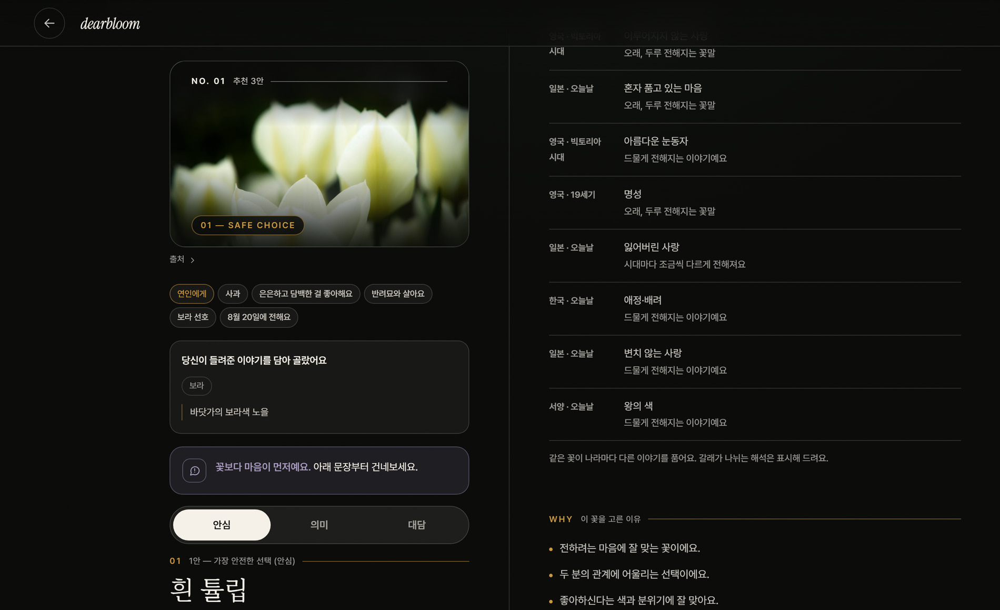

사용자가 넣는 것
받는 것 · 성격이 다른 세 갈래
03
대담 선택
취향과 추억을 더 강하게 반영한 꽃

실제 화면추천 결과 — 꽃 3안·선택 이유·꽃말 갈래가 한 화면에
2026.08 프로토타입
FEATURE 01
선택 이유가 있는 추천
꽃 이름만 보여주지 않고, 어떤 입력과 이야기 때문에 골랐는지 설명합니다.
FEATURE 02
여러 갈래의 꽃말
색상·문화권·시대에 따라 달라지는 의미를 출처와 함께 보여줍니다.
FEATURE 03
안전을 먼저 보는 추천
크게 위험한 꽃은 점수를 낮추는 것이 아니라 추천 전에 제외하고, 주의가 필요한 꽃은 그 사실을 함께 보여줍니다.
FEATURE 04
전달과 구매까지 연결
카드 문구·비밀 편지·꽃 조합·판매처 탐색으로 이어집니다.